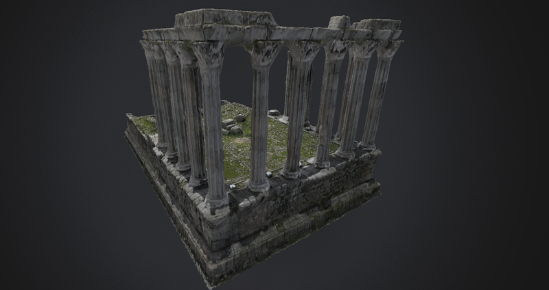

Skip to content
University of Évora
Geological Data Science
The laboratory
Research
Technologies
Projects
Publications
People
Gallery
Collaborations
Services
Contact
Atlas 3D
PT
EN
← Back to the atlas
Temple of Diana
Évora, Portugal. Explore the original RGB point cloud in three dimensions.

Explore in 3D
+
−
↺
Ⅱ
56,577 points · RGB colours